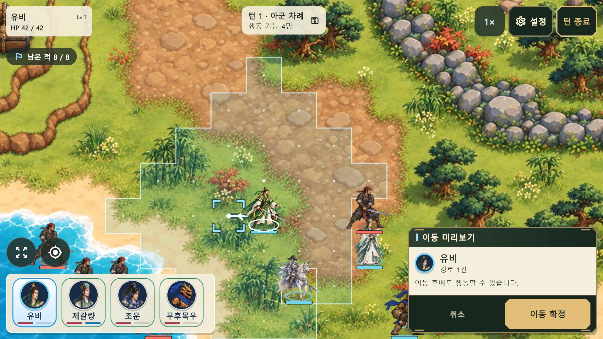
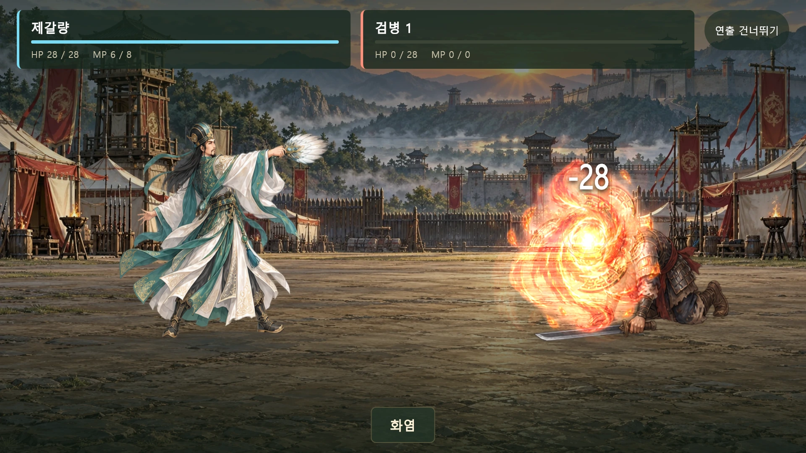

Read the battlefield.
Command the next move.
A fantasy turn-based tactical RPG featuring Three Kingdoms heroes. Consider terrain, movement and weapon range before choosing your next action.
Explore real gameplayOriginal promotional hero art. The gameplay images below are rendered by the current game.
A battlefield made for landscape play
Touch the field, review movement range and ally status, then choose an action from a compact floating command panel.


Spells that turn the tide
Manage health and magic, check targets and range, and cast your spell. Battle scenes can be enabled or disabled in settings.
Free campaign. One-time ad removal.
Interstitial ads may appear between battles when continuing after the second victory, and on a confirmed defeat retry from battle three onward. Ads are at least two minutes apart. No connection or no available ad does not block progress.
Ad removal is registered at KRW 5,000 in Korea. The relevant app store displays the actual price. It removes interstitials without changing character power or rewards.
Progress and settings stay on your device. No developer account or game server is required. Purchases, restoration and ads may require a network connection.
Story dialogue currently remains in Korean. English and Japanese menus are available, but complete story translations are not yet provided.
Contact support →